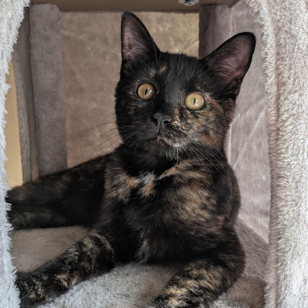

"If I have seen further, it is by standing on the shoulders of giants."
— Sir Isaac Newton
I'm Chris Marriott, Teaching Professor at the University of Washington Tacoma. This is my space for courses, research, and the ideas that connect them — agent-based simulation, cultural and biological evolution, AI, and the complexity hiding inside simple rules.
Taught at UWT School of Engineering and Technology. Each course has a YouTube playlist with full lecture recordings.
Logic, sets, relations, graphs, and combinatorics — the mathematical foundations every computer scientist needs. Proof techniques emphasized throughout.
Arrays, linked lists, trees, graphs, hash tables — and how to choose the right structure for the job. Bridges foundational theory with practical implementation.
The mathematical backbone of computer science. Correctness proofs, complexity analysis, and the elegant structures that make hard problems tractable.
Getting a defensible number out of a physical measurement. Real crash tests and tracked basketball shots, and the judgement that turns a method into an answer.
Critical writing and thinking skills alongside exploration of your own values. We use generative AI ethics as both the subject of inquiry and the medium of work.
What can and cannot be computed — and why. Finite automata, pushdown automata, Turing machines, decidability, and the limits of algorithmic reasoning.
Build games and simulations from the ground up. Project-based course covering game loops, physics, AI agents, and the design thinking behind interactive systems.
Core AI techniques alongside serious engagement with what intelligence is and what it means to build it. Includes agent-based modeling and evolutionary systems.
Browser-based agent-based models, from published research to work in flight and teaching demos. All open source on GitHub.
When culture can do a job that genes used to do, does it pay to keep the genes? Published at ALIFE 2026.
Can the domestication syndrome emerge when humans select for only one trait? Published at ALIFE 2023.
How a colony divides foraging and breeding between workers and queens. Published in Artificial Life, 2022.
Can multicellular cooperation emerge from simple rules about which organisms fit together? In flight.
Turmites, the two-dimensional Turing machines of Langton's ant, given heredity on a hex grid. In flight.
The classic cellular automaton. Complexity and apparent life from four simple rules.
Research in artificial life, cultural evolution, and CS education.
Energetic Competition and Relaxed Selection in Gene-Culture Co-evolution
Domestication syndrome via indirect selection in simulated cereal grains
Labor-based Grading in Computer Science: A Student-Centered Practice
Deterministic response threshold models of reproductive division of labor in artificial ants
Social learning and cultural evolution in artificial life
Finding a Mate With No Social Skills
The Effect of Social Learning on Individual Learning and Evolution
Imitation as a mechanism of cultural transmission

I'm a Teaching Professor with a PhD in Computer Science and Philosophy, blending over two decades of classroom experience with interdisciplinary research simulating biological and social systems.
My research focuses on agent-based simulations of genetic and cultural evolution, language and collective consciousness, domestication modeling, and artificial ant social structures. I'm drawn to questions where computation and philosophy meet — where simulation ends and the thing itself begins.
Outside the lab and the classroom I go to EDM festivals. The festival community has a motto, PLUR (peace, love, unity, respect), and it is one I take seriously. Festivals have been an important part of my life since 2018, and I have been to dozens of festivals and raves (these days I keep it to about two a year). This year that was EDC Las Vegas in May and Bass Canyon at the Gorge in August.
I live with two cats, Angel and Nova. Angel is a tuxedo cat, born in November 2021, and Nova is a kitten who joined the household in June 2026 (Angel now has company).
Get in touchThe best way to reach me is by email. Students should start with their course site.
dr.chris.marriott@gmail.com